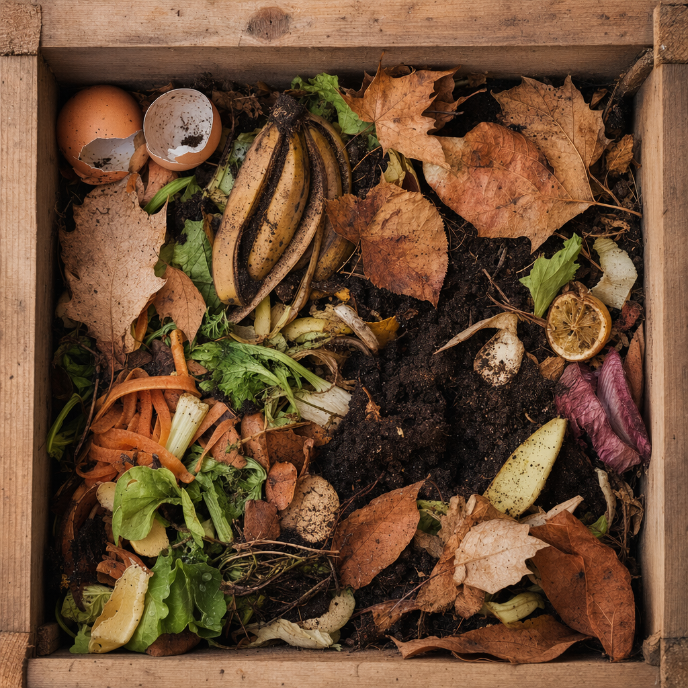

Turn Scraps Into Garden Gold
 GROUNDWORK
GROUNDWORK01
Choose Your Bin
GROUNDWORK02
Balance the Mix
GROUNDWORK03
Turn It Weekly
GROUNDWORK04
Keep It Just Damp
GROUNDWORK05
Harvest the Dark Crumbs
GROUNDWORK